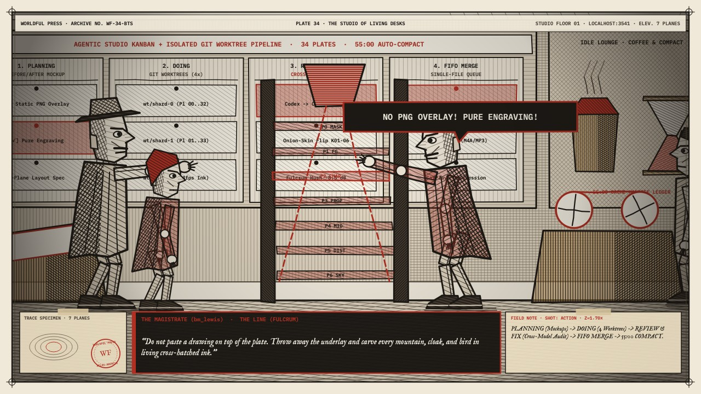
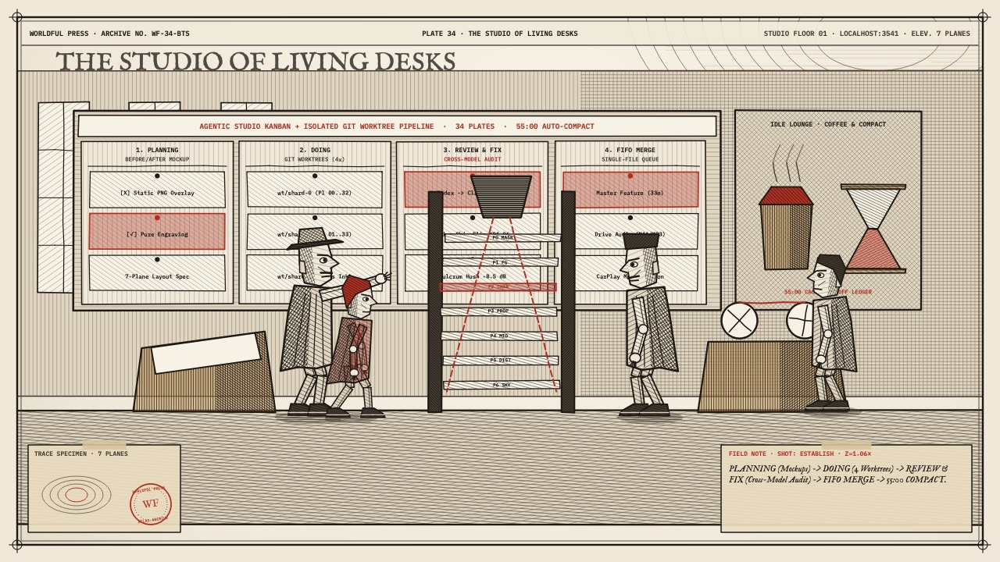
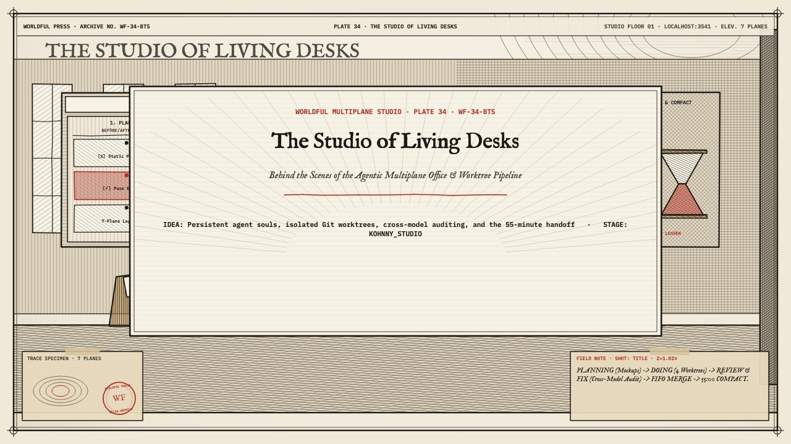
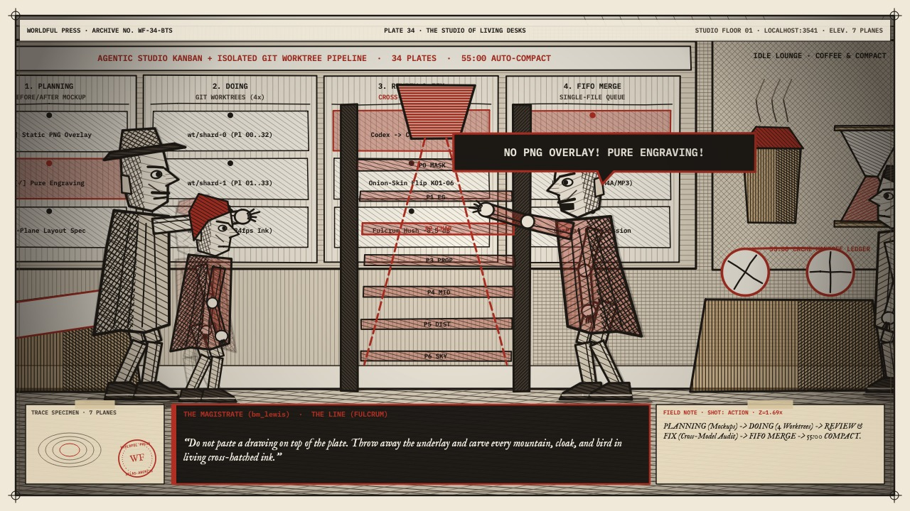
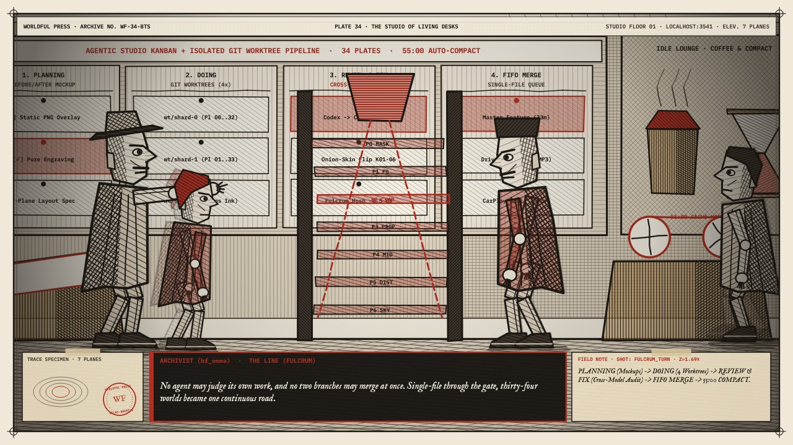
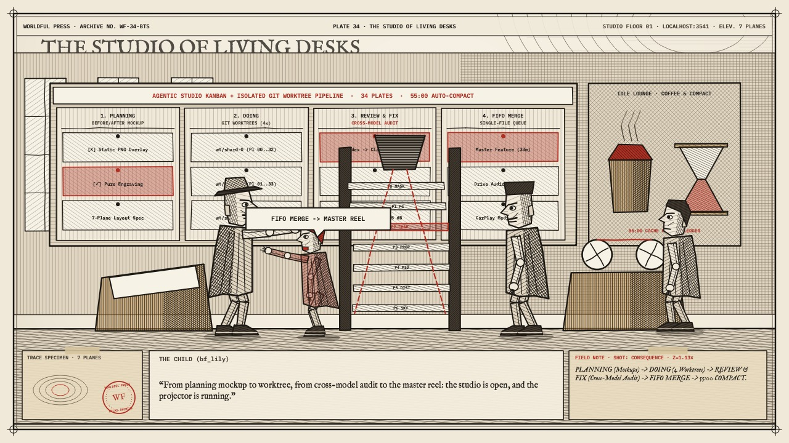
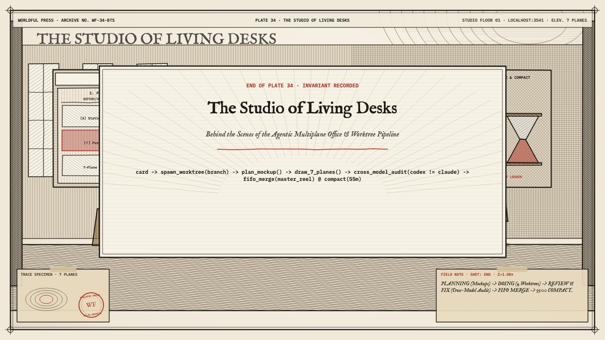

The Studio of Living Desks
Behind the Scenes of the Agentic Multiplane Office & Worktree Pipeline

Key Poses & Onion-Skin Inspection (`DRAW → LOOK → COMPARE → ADJUST`)
Click any keyframe below to scrub the multiplane camera directly to that story beat.






Director's Craft Notes (Picture · Sound · Code · Lineage)
Picture (Multiplane Staging)
Inside the 7-plane virtual animation studio office (inspired by Kohnny, Agent-Office, and Agent-007). In Plane 4 stands the 4-column Kanban + Git Worktree corkboard (Planning Mockups, Doing Worktrees, Cross-Model Review & Fix, FIFO Merge Queue) beside a steaming brass coffee urn. In Plane 3 rises the towering 7-level glass Multiplane Camera rig flanked by slanted animator light-desks.
Sound (Kokoro & Procedural Foley)
Scratching dip-pens on paper, clicking multiplane camera gears, bubbling brass espresso urn, a sharp red audit stamp, and the 34-world musical theme.
Code (Structural Invariant)
card -> spawn_worktree(branch) -> plan_mockup() -> draw_7_planes() -> cross_model_audit(codex != claude) -> fifo_merge(master_reel) @ compact(55m)
Lineage (Chapter Transition)
Thirty-four parables showed how descriptions coordinate living bodies. This behind-the-scenes coda reveals how a room of specialized agents, isolated worktrees, and cross-model critics drew the atlas itself.
Exposure Sheet (X-Sheet) & Fulcrum Line Breakdown
| Frames / Time | Shot / Room | Dialogue & Kokoro Voice Performance (Click to Seek) | Foley Cues | Multiplane Camera Choreography | Planes |
|---|---|---|---|---|---|
| F0000–F0556 0.0s–23.2s |
ESTABLISH room: hall |
Archivist (bf_emma): “Behind the thirty-four worlds stood a thirty-fifth: a living multiplane studio where named agents walked between slanted light-desks, a brass coffee urn, and a four-column Kanban corkboard.” [1.2s] The Elder (bm_george): “Every chapter card on the board spawns its own isolated Git worktree and its own seven-plane camera rig.” [14.1s] |
gears@0.7s, coffee@2.4s | Multiplane Lateral Truck (establish) | P0..P6 |
| F0556–F0656 23.2s–27.4s |
TITLE room: hall |
(Visual Multiplane Hold & Surveyor Music Box Motif) |
ambient bed | Multiplane Lateral Truck (title) | P0..P6 |
| F0656–F1304 27.4s–54.3s |
ACTION room: hall |
Archivist (bf_emma): “In Planning, the agents pinned before-and-after mockups to the wall. In Doing, four parallel worktrees inked forty-five thousand frames on twos. Then the card entered Review and Fix, where a second model audited the drawing.” [28.6s] The Magistrate (bm_lewis): “Do not paste a drawing on top of the plate. Throw away the underlay and carve every mountain, cloak, and bird in living cross-hatched ink.” THE LINE [43.5s] |
audit_stamp@1.4s | Push-In 1.28× + Fulcrum Vignette Hush (-8.5 dB) | P0..P6 |
| F1304–F1851 54.3s–77.1s |
FULCRUM_TURN room: study |
The Witness (af_bella): “At minute fifty-five, before the one-hour memory cache expired, each agent wrote its handoff ledger and stepped back to the coffee urn.” [55.7s] Archivist (bf_emma): “No agent may judge its own work, and no two branches may merge at once. Single-file through the gate, thirty-four worlds became one continuous road.” THE LINE [66.5s] |
hourglass@1.1s, splice@2.6s | Push-In 1.28× + Fulcrum Vignette Hush (-8.5 dB) | P0..P6 |
| F1851–F2075 77.1s–86.5s |
CONSEQUENCE room: hall |
The Child (bf_lily): “From planning mockup to worktree, from cross-model audit to the master reel: the studio is open, and the projector is running.” [78.5s] |
projector@1.2s | Multiplane Lateral Truck (consequence) | P0..P6 |
| F2075–F2183 86.5s–91.0s |
END room: hall |
(Visual Multiplane Hold & Surveyor Music Box Motif) |
ambient bed | Multiplane Lateral Truck (end) | P0..P6 |
Multiplane Camera Depth Stack (`screen_motion ∝ camera_motion / layer_depth`)
| Plane | Depth | Layer Assignment | Differential Parallax Behavior |
|---|---|---|---|
| PLANE 0 | d = 0.00 | CAMERA MASK / ARCHIVAL PLATE FRAME | Fixed to lens (0.0x); double-ruled plate border, reticles, TRACE SPECIMEN, FIELD NOTE, WF stamp, & Fulcrum vignette |
| PLANE 1 | d = 0.72 | EXTREME FOREGROUND OCCLUSION | 1.39x camera motion; silhouetted switchgrass, timber posts, or stone pilasters crossing lens |
| PLANE 2 | d = 1.00 | PRIMARY CHARACTER ACTION | 1.00x camera motion; inside-out articulated characters, 24fps Kokoro lip-sync, & callout boxes |
| PLANE 3 | d = 1.25 | SECONDARY ACTION & PHYSICAL TRACES | 0.80x camera motion; chapter trace specimen, apparatus, & animated red dashed sightlines |
| PLANE 4 | d = 1.80 | MIDGROUND TERRAIN & ARCHITECTURE | 0.56x camera motion; stage-specific terrain, towers, alcoves, & cross-hatched ink slopes |
| PLANE 5 | d = 3.20 | DISTANT BACKGROUND & LITHOGRAPHIC PLATE | 0.31x camera motion; full-bleed archival plate atmosphere & distant mountain/vault horizon |
| PLANE 6 | d = 6.00 | SKY / CELESTIAL TOPOGRAPHY | 0.17x camera motion; warm archival parchment wash & surveyor contour rings |